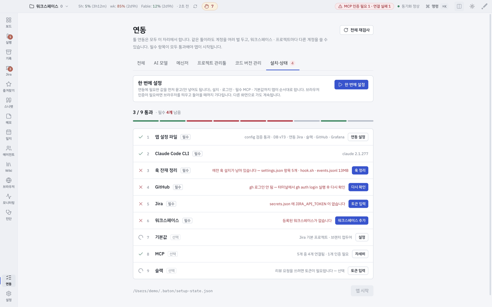
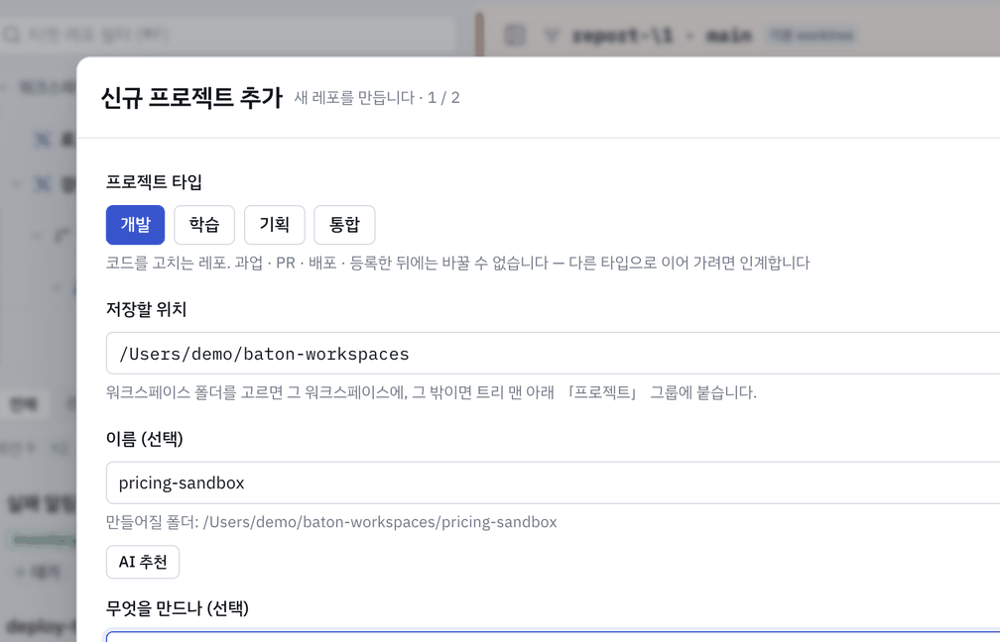

시작하기
설치부터 첫 작업까지 여섯 단계. 화면마다 자세한 사용법은 메뉴얼에 있습니다.
1
받아서 열기
- 내 맥에 맞는 dmg 받기 — Apple silicon 은
-arm64, Intel 은 접미사 없는 것 - 서명·공증본 — Gatekeeper 경고 없이 열림
- 자동 업데이트 없음 — 새 dmg 로 덮어쓰면 되고 데이터는 그대로
2
필수 항목이 모두 통과하면 앱이 열립니다
「한 번에 설정」 누르기
처음 켜면 준비 화면이 9개 항목을 점검합니다. 버튼 하나로 끝납니다.
- 앱이 알아서 하는 것 — 필요한 도구 설치 · 로그인 · 필수 MCP 연결 · 기본값 채우기
- 브라우저 로그인이 필요하면 창을 열어 주고, 돌아와 누르면 이어서 진행
- 사람이 할 것만 마지막에 안내 — 워크스페이스 폴더 고르기 · 토큰 입력
- 도는 동안 다른 화면으로 가도 됨 — 끝나면 알림
- 실패한 줄에는 「고치기」 버튼 — 그 자리에서 해결

3

상단바 워크스페이스 이름 › 추가 메뉴
신규 프로젝트 추가 — 이름을 비우면 적은 내용으로 제안해 줍니다
워크스페이스와 프로젝트 추가하기
상단바 왼쪽의 워크스페이스 이름을 누르면 추가 메뉴가 열립니다.
- 워크스페이스 추가 — 폴더 하나 고르기. 하위 git 레포를 찾아 목록으로 보여 줌
- 프로젝트 고르기 — 찾아낸 목록에서 쓸 레포만 체크. 체크한 행에서 타입(개발 · 학습 · 기획 · 통합)도 함께 고름 — 등록 뒤에는 못 바꿈
- git 레포가 아닌 폴더도 가능 — 켜서 추가하면 앱이 그 자리에서
git init - 폴더에서 프로젝트 추가 — 워크스페이스 밖의 폴더 하나만 붙일 때
- 신규 프로젝트 추가 — 폴더조차 없을 때. 위치 · 이름 · 「무엇을 만드나」를 적으면 뼈대까지 만들어 줌

4

행 메뉴 › 그룹으로 이동 — 끌어다 놓아도 같습니다
구조 익히기
보드 트리는 다섯 단입니다. 위에서 아래로 좁아집니다.
- 워크스페이스 — 레포들을 모아 둔 폴더 한 벌. 회사 · 개인처럼 자리를 가름
- 프로젝트 — git 레포 하나
- worktree(작업) — 티켓 · 브랜치 하나짜리 작업 폴더. 서로 영향 없이 동시에 여럿
- 세션 — 그 작업에 붙은 AI 대화. 한 작업에 여러 개 가능
- 서브에이전트 — 세션이 부리는 역할. 큰 일을 나눠 맡음
그룹은 여기에 더하는 묶음입니다 — 여러 레포에 걸친 작업을 에픽처럼 한 자리에 모읍니다.
- 만들기 — 워크스페이스 행의 ⋯ › 그룹 만들기. 이름과 링크 하나(선택)
- 넣기 — 작업 행을 그룹 안으로 끌어다 놓기(행 메뉴 › 그룹으로 이동도 같음)
- 빼기 — 그룹 밖으로 끌어다 놓거나 ⌥⌫ — 제 프로젝트 자리로 돌아감
- 그룹째 문서를 붙이고, 구성원 세션에 같은 요청을 한 번에 보낼 수 있음
5

프로젝트 행 메뉴 — 이 레포로 할 수 있는 일이 모여 있습니다
첫 작업 만들기
- 트리에서 프로젝트 행의 ⋯ › worktree 만들기
- 브랜치 이름 넣기 — Jira 티켓 키는 선택
- 티켓을 넣으면 그 내용을 읽은 세션까지 열림
- 만드는 동안 다른 일 계속 — 다 되면 우하단 알림으로 안내
6

입력창 — 쓰는 대로 마크다운이 보이고, 위 칩이 워크플로우입니다
세션에 일 시키기
- 오른쪽 상세 패널의 입력창에 평소 말로 지시
- 입력창 위 칩은 워크플로우 — 누르면 정해진 일이 바로 시작(⌘⌥1~⌘⌥9)
- 승인·거부 카드가 대화 안에 뜸 — 밖으로 나가는 일은 묻고 함
- 터미널이 필요하면 ⌘⇧T — 세션 탭과 같은 줄에 터미널 탭이 서고, 앱을 떠나지 않고
npm run dev같은 명령 실행
먼저 외울 단축키
| 키 | 하는 일 |
|---|---|
| ⌘↵ | 전송 — 한글을 조합하는 중에는 보내지 않음(조합을 끝내고 한 번 더) |
| ⇧↵ | 입력창으로 점프 — 대화를 읽다가 바로 쓰기로 |
| ⌘⌥↓ | 제일 최근 대화로 한 번에 내리기 |
| ⌃C | 도는 응답만 중단 — 세션은 살아 있음 |
| ↑ | 입력창에서 보낸 말 다시 꺼내기 |
| ⌘T / ⌘W | 새 세션 / 세션 탭 닫기 |
| ⌃Tab | 다음 세션 탭 — 터미널 탭도 같은 줄에서 함께 돎 |
| ⌘F | 대화에서 찾기 |
| ⌘⇧F | 통합 검색 — 지금 것과 보관된 것을 한 번에 |
| ⌘ ⌘ | 단축키 창 — ⌘ 를 두 번 톡톡. 키를 눌러 무엇에 걸렸는지도 찾음 |
화면 둘러보기
왼쪽 레일에서 화면을 고릅니다. 번호 키(⌘1~⌘9)는 위에서부터 차례로 붙습니다.
보드 ⌘1
트리 · 작업 목록 · 세션 대화 — 일하는 자리
실행 ⌘2
워크플로우를 돌리고 진행을 보는 자리
기록 ⌘3
닫은 작업 검색 · 성과 모아보기
Jira ⌘4
내 티켓 목록과 상세 · 새 티켓 살피기
즐겨찾기 ⌘5
자주 여는 링크를 소속별로 모아 두기
스니펫 ⌘6
자주 치는 문장을 입력창 버튼으로
메모 ⌘7
글 · 파일 · 이미지를 모아 두는 개인 기록
일지 ⌘8
하루 동안 한 일을 시간대별로
에이전트 ⌘9
역할을 정의하고 업무 맡기기
Wiki
문서 · 링크 · 메모를 한 자리에
브라우저
앱을 떠나지 않고 웹 보기 — AI 가 연 탭도 여기
모니터링
Grafana 대시보드를 앱 안에서
진단
점검 목록 다시 돌리기 · MCP 상태
연동
툴 연동과 계정 — 필수가 깨지면 빨간 숫자
설정
화면 배율 · 알림 · 레이아웃 · 기기 옮기기
쓰지 않는 레일은 숨겨집니다. Jira · 슬랙 같은 연동을 비워 두면 그 화면과 관련 워크플로우가 목록에서 조용히 빠집니다.
막히면
화면과 메뉴마다 따라 하기와 캡처가 있습니다. 그래도 안 되면 메일 주세요.